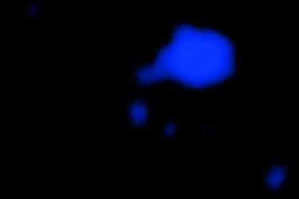
stirring-a-potPublic domain · X-ray: NASA/CXC/Univ. Milano-Bicocca/W. Wang et al.; Infrared: NASA/ESA/CSA/STScI; Radio: ESO/NRAO/NAOJ/ALMA; Image processing: NASA/CXC/SAO/N. Wolk & P. Edmonds · source
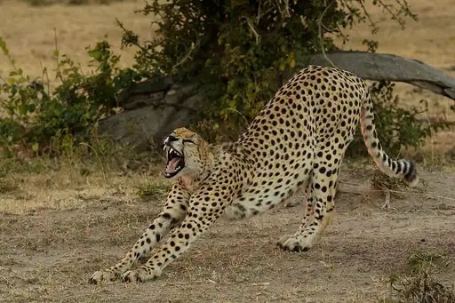
stretchingCC BY-SA 4.0 · Thomas Fuhrmann · source
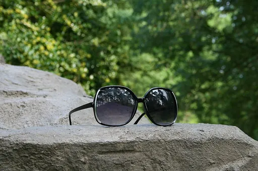
sunglassesCC BY-SA 4.0 · Ildar Sagdejev (Specious) · source
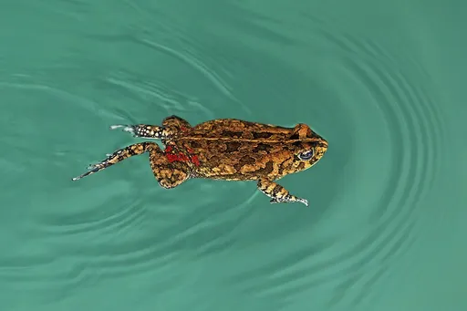
swimmingCC BY-SA 4.0 · Charles J. Sharp · source
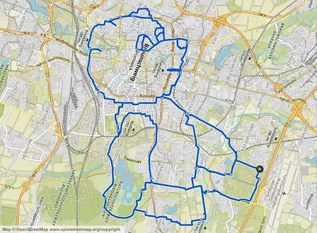
teddy-bearCC BY-SA 2.5 · Volker Weinlich · source
telephoneCC0 · Abiba Pauline · source
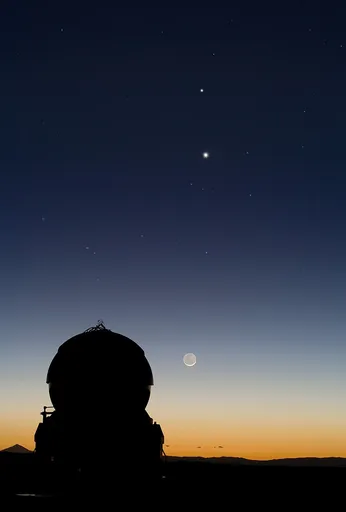
telescopeCC BY 4.0 · ESO/Y. Beletsky · source
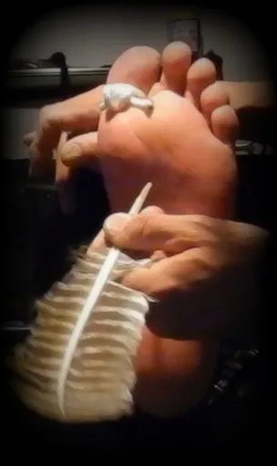
ticklingCC BY-SA 4.0 · Pure male feet · source
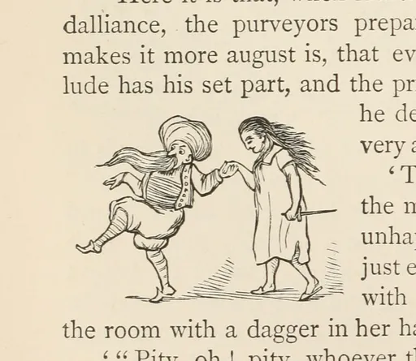
tiptoeingPublic domain · William Makepeace Thackeray · source
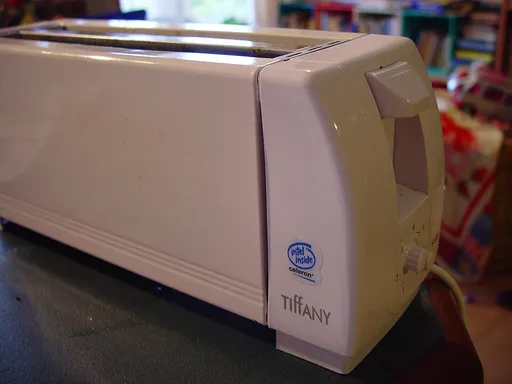
toasterPublic domain · Leon Brooks · source
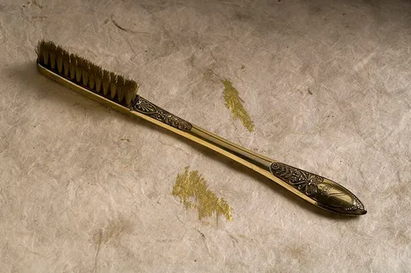
toothbrushCC BY 4.0 · https://wellcomeimages.org/indexplus/obf_images/af/ec/81e0067b4e01f57b768223871008.jpg Gallery: https://wellcomeimages.org/indexplus/image/L0043863.html Wellcome Collection gallery (2018-03-31): https://wellcomecollection.org/works/f9mpas7m CC-BY-4.0 · source
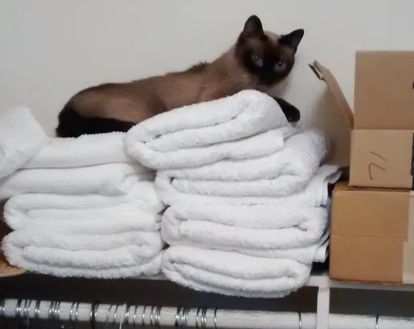
towelCC0 · Catholicjen · source

tractorCC BY-SA 4.0 · Basile Morin · source
trainCC BY-SA 3.0 · AEMoreira042281 · source
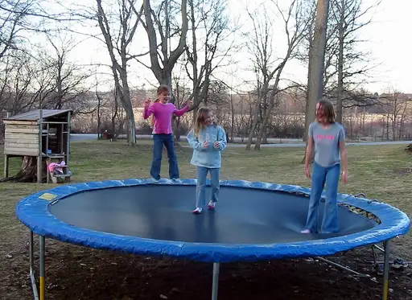
trampolineCC BY 2.0 · Mathew Ingram · source
treeCC BY-SA 3.0 · Diego Delso · source
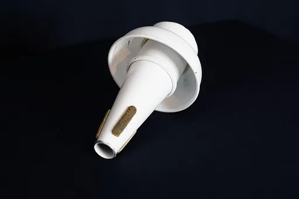
trumpetCC BY-SA 4.0 · DrTrumpet · source
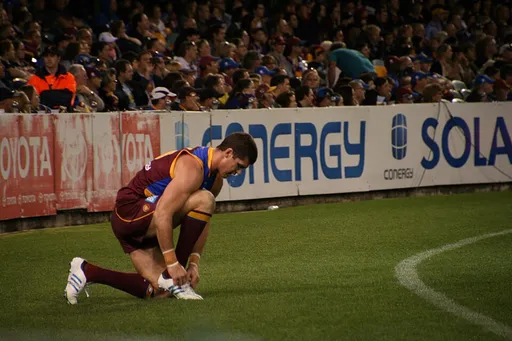
tying-shoelacesCC0 · Joshua Ryan · source
tying-shoesCC0 · Priscilla Du Preez artographybyp · source
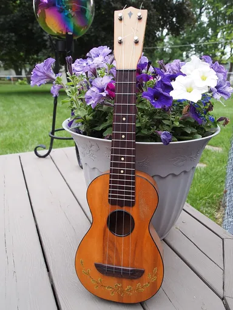
ukuleleCC BY-SA 3.0 · Aggie80 · source